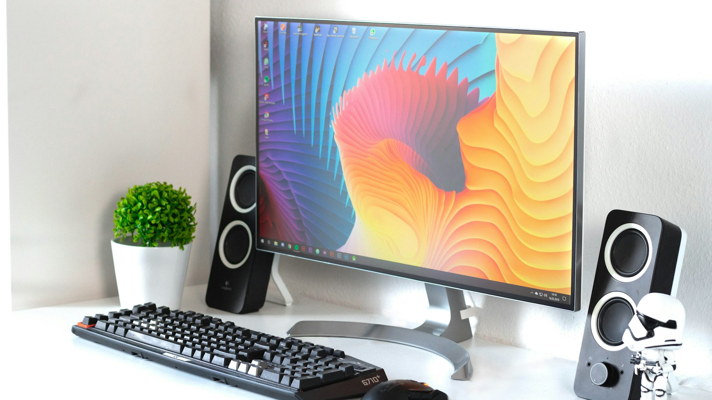

The Evolution of Electric Vehicles: Driving Toward a Sustainable Future
This article explores the advancements in electric vehicle technology, their impact on the automotive industry, and the benefits they offer for a sustainable future.Scenes

The Evolution of E-Learning: Trends and Future Directions
An exploration of the evolving landscape of e-learning, highlighting current trends, technologies, and strategies shaping the future of education.
Emma Thompson
2024-12-23
The Fabric of Reality: Virtual Worlds in Cyberpunk Narratives
This article explores the significance of virtual worlds in cyberpunk literature, analyzing how they shape identity, society, and the human experience in an increasingly digital age.
Lucas Bennett
2025-09-13
Sustainable Technologies: Paving the Way for a Greener Future
An exploration of innovative sustainable technologies and practices that are transforming industries and contributing to environmental conservation.
Sophia Martinez
2024-10-20
The Evolution of Communication Technologies: Shaping Our Connected World
This article explores the evolution of communication technologies, highlighting key advancements that have transformed how we connect and share information in the modern world.
Liam Anderson
2025-06-07

The Impact of Hardware on Modern Gaming Experiences
An exploration of how advancements in computer hardware have transformed the gaming industry and user experiences.
Michael Thompson
2025-07-06